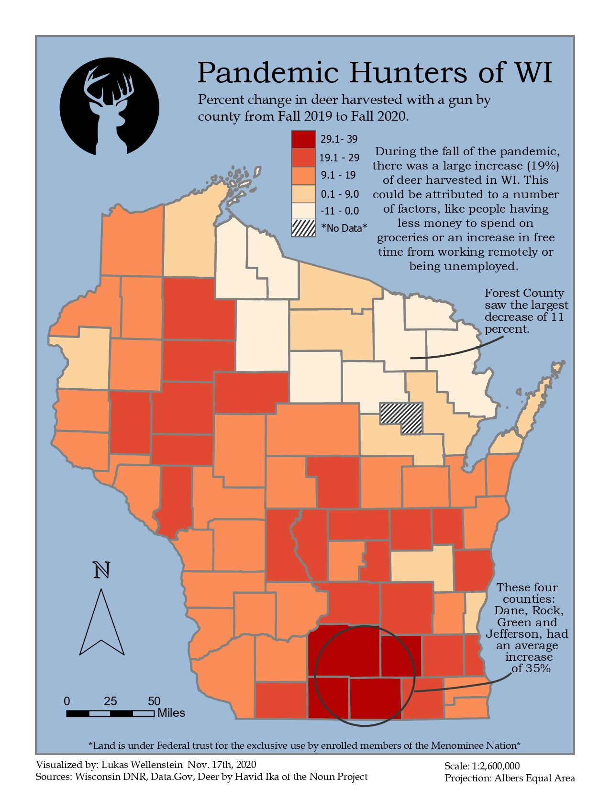

During the fall of 2020, everything was shut down and school was online. I personally took this time to hunt as much as I possibly could.
A year later, we were asked to create a choropleth map. My inspiration came from thinking about the difference in how much I hunted during 2019 and 2020.
If I took the time to hunt more, why wouldn't other people? By taking the total deer harvests by county for each year, I mapped the change from 2019 to 2020 to
visualize any real change.